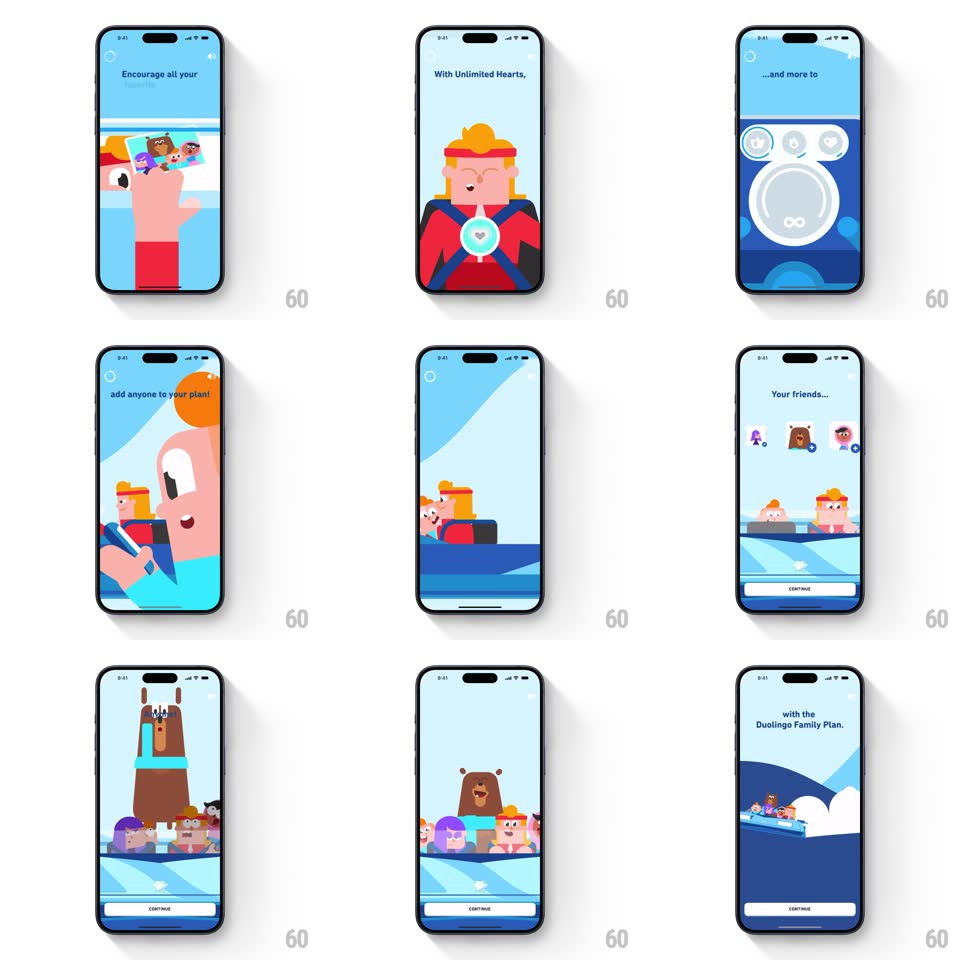

Media
Frame-by-frame

Rebuild this interaction 1:1: Duolingo's Family Plan promo story - a multi-beat cartoon sequence: characters ride in a car ("Encourage all your favorite people to learn new"), a red-jacketed character shows an "Unlimited Hearts" badge, a ring of feature icons appears ("...and more to help them learn fast!"), and the family gathers in the car with the bear as "Your family... with the" copy builds, a Continue button below.

Rebuild this interaction 1:1: Duolingo's Family Plan promo story - a multi-beat cartoon sequence: characters ride in a car ("Encourage all your favorite people to learn new"), a red-jacketed character shows an "Unlimited Hearts" badge, a ring of feature icons appears ("...and more to help them learn fast!"), and the family gathers in the car with the bear as "Your family... with the" copy builds, a Continue button below.
## Integration
Integration: stack-agnostic spec - springs given as stiffness/damping, timed motions as duration + curve; map every value to your framework and animation library of choice.
## Scene
Sky-blue story screens: car scenes with Duolingo cast characters, headline copy top-left, a phone-photo moment, the Unlimited Hearts badge beat, a feature-icon ring beat, and a closing family-wide shot with a Continue button.
## Motion spec
Pattern: auto-playing character story with prop pops.
- Beats advance every ~2s (or on tap); each beat's illustration slides in from the right (spring ~340/22, 350ms) as the copy types in word by word (~70ms/word).
- Car scenes: the car bobs gently (translateY +/-6px, 1.2s loop) with the background parallaxing left.
- Badge beat: the Unlimited Hearts badge scales in (spring ~300/16, 400ms) with a sparkle burst.
- Icon ring beat: three feature icons pop in around a ring (scale springs, 120ms stagger), the ring drawing on (stroke, 400ms).
- Finale: each family member pops into the car (staggered 150ms, scale 0 -> 1.1 -> 1), ending with the bear; Continue fades in.
## Calibration
- Copy leads each beat; the illustration completes after the text.
- Palette stays bright and flat - classic Duolingo illustration style.
## Reduced motion
Beats crossfade (250ms); characters appear complete; no bobbing.
## Don't miss
- The car is the through-line - characters join it beat by beat until the whole family rides together.
- The phone-photo beat is a selfie of the cast, a quick gag, not a UI mock.